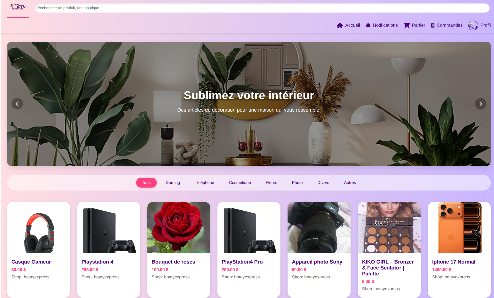

À propos de moi
Je m’appelle Daniel Bokingo, je suis actuellement étudiant en Informatique ( Bachelor Administrateur système DevOps) à l’École-it de Valenciennes. Passionné par l'architecture backend et la sécurité, j’aime concevoir et développer des projets personnels stimulants, qui me permettent de mettre en pratique mes compétences et de repousser constamment mes limites techniques.
J’aime analyser les besoins, lire, écouter de la musique, Jouer au Basket-ball. Mon ambition est de travailler dans une entreprise moderne, orientée vers le bien-être et qui me permettra d'exploiter l'intégralité de mes compétences.
Mon objectif
Evoluer vers un poste de Développeur Backend ou Administrateur système DevOps dans une entreprise innovante, où je pourrai contribuer à des projets passionnants et continuer à développer mes compétences techniques.
- Développeur Backend
- Administrateur système DevOps
- Sécurité
- Architecture Backend
- IoT
Compétences
Parcours & expériences
Baccalauréat en Electronique Industrielle
Septembre 2021 – Juillet 2025 · Institut Technique Salama-Don Bosco - Lubumbashi, RDC
Technicien de maintenance - Stage
Fevrier 2025 – Avril 2025 · Societé Nationale des Chemins de Fer du Congo – Lubumbashi, RDC
Bachelor en Administration système DevOps
Janvier 2026 - Aujourd'hui · Ecole-it, Valenciennes, France
Projets

Elikya - Marketplace e-commerce
Portfolio Personnel
MarketLog
Jeu du serpent en python
E-quiz
Bistrot Le Resto
Projet - Chichats
Projet - Web_blog
Prototypage RFID
Lecteur d'empreinte digitale
Radar à ultrasons
Soft-skills
- Résolution de problèmes
- Travail d'équipe
- Communication
- Adaptabilité
- Autonomie
- Curiosité technique
Centres d’intérêt
- Musique
- Basket-ball
- Voitures
Contact
Intéressé(e) par mon profil pour un stage, une alternance ou une collaboration sur un projet ? N’hésitez pas à me contacter.